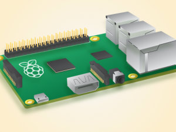

Click to know more...
Description
The Product Unveil page uses jQuery's slide method and mouse events to unveil a new product. This page is populated with the name, contextual image, specifications and description of the product. In its initial state, the page displays a title and an inverted area sensitive to a mouse click event. On clicking it, the page unveils itself and the product. For clarity and a professional look, the clickable area hides itself on clicking.
Raspberry Pi 2

The Raspberry Pi 2 Model B is the second generation Raspberry Pi. It replaced the original Raspberry Pi 1 Model B+ in February 2015. Compared to the Raspberry Pi 1 it has:
- A 900MHz quad-core ARM Cortex-A7 CPU
- 1GB RAM
Because it has an ARMv7 processor, it can run the full range of ARM GNU/Linux distributions, including Snappy Ubuntu Core, as well as Microsoft Windows 10 (see the blog for more information). The Raspberry Pi 2 has an identical form factor to the previous (Pi 1) Model B+ and has complete compatibility with Raspberry Pi 1. We recommend the Raspberry Pi 2 Model B for use in schools: it offers more flexibility for learners than the leaner (Pi 1) Model A+, which is more useful for embedded projects and projects which require very low power.
Documentation
Title
...
...
Source files
HTML
CSS
JavaScript
References